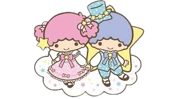

|  | Little Twin Stars (リトルツインスターズ, Ritoru Tsuin Sutāzu ), Kiki dan Lala , adalah sepasang karakter dari perusahaan Jepang Sanrio . Mereka lahir pada tanggal 24 Desember (Malam Natal) di Omoiyari Star di Dream Star-Cloud. Untuk mempelajari cara menjadi bintang terbaik dan paling bersinar, mereka melakukan perjalanan jauh ke Bumi. Kiki (キキ, Kiki ), adik laki-lakinya, memiliki rambut pendek berwarna biru (atau terkadang coklat). Dia suka memancing bintang dan menciptakan sesuatu. Keingintahuannya terhadap segala hal terkadang bisa membuatnya sedikit kurang ajar. Dia mengenakan gaun putih lengan panjang dan bertelanjang kaki. Lala (ララ, Rara ), kakak perempuannya, memiliki rambut panjang berwarna merah muda (atau terkadang pirang). Dia bisa menjadi sedikit pemalu, dan dia suka menggambar, menulis puisi, dan memasak! Seperti Kiki, dia mengenakan gaun putih lengan panjang dan bertelanjang kaki. Sebagai kakak beradik, Kiki dan Lala sangat dekat dan selalu bermain bersama. Kiki memperhatikan kakak perempuannya, Lala, dan juga berpikir bahwa tugas Kiki adalah melindunginya. Karena Kiki sangat penasaran, terkadang dia menempatkan dirinya dalam situasi berbahaya yang membuat Lala mengkhawatirkannya. Bahkan dalam keadaan yang jarang terjadi ketika keduanya bertengkar, si kembar berhasil kembali bersama dengan cukup cepat. |
| Informasi Lebih Lengkap Bisa Kamu Baca Disini!૮₍˶ᵔ ᵕ ᵔ˶₎ა |